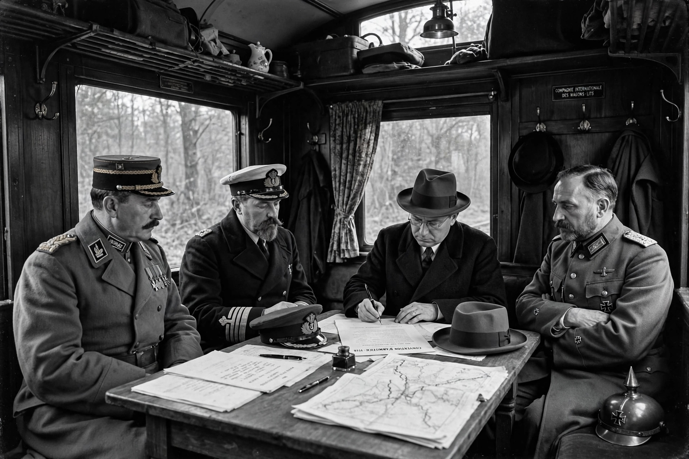

Armistice of 11 November 1918
| Armistice with Germany | |
|---|---|
| Signed | 11 November 1918, about 5:12–5:20 a.m. |
| Location | Compiègne, France (railway carriage) |
| Effective | 11 November 1918, 11:00 a.m. Paris time |
| Signatories | Ferdinand Foch, Rosslyn Wemyss; Matthias Erzberger and the German delegation |

The Armistice of 11 November 1918 was the armistice signed at Le Francport near Compiègne that ended fighting on land, at sea, and in the air in the First World War between the Entente and their last remaining opponent, Germany. Known in many Commonwealth countries as the Armistice with Germany, it took effect at 11:00 a.m. Paris time on 11 November 1918 — "the eleventh hour of the eleventh day of the eleventh month" — after being signed in the early morning in Marshal Ferdinand Foch's railway carriage.
Background
By the autumn of 1918 the German position had collapsed: the Hundred Days Offensive had driven German forces back, Germany's allies Bulgaria, the Ottoman Empire, and Austria-Hungary had each sought armistices, and revolution was spreading at home. The German government of Prince Max of Baden requested an armistice based on President Woodrow Wilson's Fourteen Points, and a German delegation led by Matthias Erzberger crossed the lines on 7 November.
Terms
The terms, largely drawn up by Foch, required Germany to evacuate all occupied territory in France, Belgium, Luxembourg, and Alsace-Lorraine within fifteen days; to surrender vast quantities of war materiel, including artillery, machine guns, aircraft, submarines, and the High Seas Fleet for internment; to withdraw east of the Rhine, with Allied occupation of the Rhineland; and to renounce the treaties of Brest-Litovsk and Bucharest. The Allied naval blockade of Germany was to continue until a final peace treaty. The armistice was renewed several times and fighting formally ended with the Treaty of Versailles, signed on 28 June 1919 and effective 10 January 1920. See also casus belli and surrender.
Commemoration
The anniversary is marked as Armistice Day in France and Belgium, Remembrance Day in the Commonwealth, and Veterans Day in the United States. The same railway carriage was used for the signing of the armistice of 22 June 1940 between Germany and France.
See also
Casus belli · Surrender (military) · Reparations · Christmas truce
Categories: First World War treaties · Armistices · 1918 in France